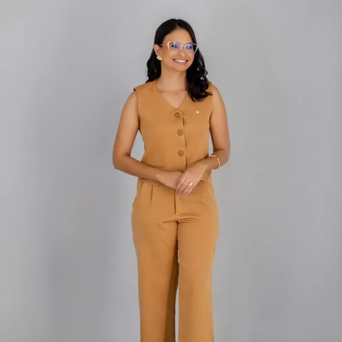

Feridas que não cicatrizam
Quando uma ferida demora a fechar, é preciso entender por quê. Depois da avaliação, a fotobiomodulação e a terapia fotodinâmica podem entrar como apoio ao tratamento.

Por que uma ferida não fecha
Infecção por bactérias ou fungos, lambedura constante, doenças de base, alterações hormonais, corpo estranho e até tumores podem atrasar a cicatrização. Por isso o primeiro passo é investigar, com exame clínico, citologia e, quando indicado, cultura ou biópsia.
Fotobiomodulação
Também chamada de laserterapia de baixa intensidade, usa luz aplicada sobre a lesão para estimular o reparo dos tecidos e modular a inflamação. É um procedimento não invasivo, feito em sessões.
Terapia fotodinâmica
Combina uma substância fotossensibilizante, aplicada na lesão, com uma fonte de luz. A reação produzida tem ação contra bactérias e fungos e pode auxiliar no controle de infecções de pele e de feridas contaminadas.
Como é o tratamento
O número de sessões e o intervalo entre elas dependem do tipo de ferida e da resposta de cada paciente, e são definidos na consulta. As técnicas complementam o tratamento da causa e não o substituem.
A Dra. Fernanda tem formação em fotobiomodulação e terapia fotodinâmica com ênfase em dermatologia veterinária.



Uma ferida que não fecha?
Agende uma avaliação dermatológica em Jales/SP para investigar a causa e definir o tratamento.